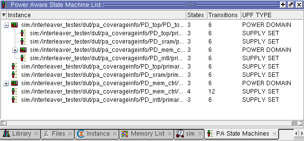
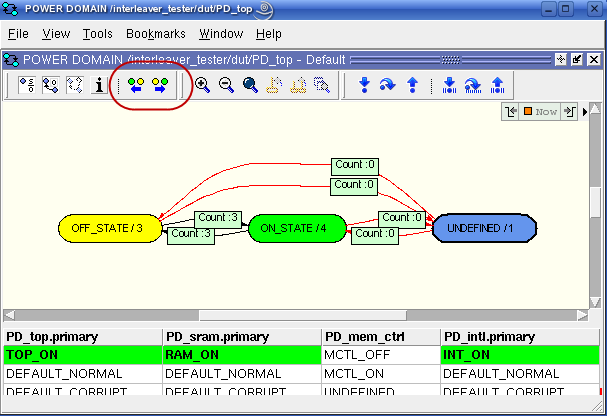

You can now run
the second power aware simulation with the same .do file used to
run the first power aware Simulation.
This simulation shows how to display power
states as a finite state machine (FSM) diagram. Power state information
(state hits and state transitions) is displayed in the same manner
as any RTL FSM detected in the design.
Note that the previous debugging features described in the first
Power Aware simulation are available in this simulation run as well.
Procedure
- Type the following command
to run the simulation:
do ./Questa/scripts/tkgui/doit_rtl.do
- Choose View > PA State Machine
List from the main menu to display a list of the defined power states,
as shown in Figure 1.
Figure 1. Power Aware State
Machine List Window 
Both the PD_intl/primary_obj
and PD_mem_ctrl/PD_mem_ctrl_PS/PD_mem_ctrl_obj power sate objects
appear twice in this pane because they are defined once and then
used in the power state definitions for the PD_top/PD_top_PS/PD_top_obj
power state object.
- Double-click
the row for the PD_top Power Domain to open the power state diagram
for that power state, as shown in Figure 2.
- Undock the State Machine window
so that the toolbar is displayed within the window.
Figure 2. PD_top Domain Power
State Diagram
By default, the pane containing the FSM diagram also provides
a table (at the bottom) that lists the respective power states that
constitute the displayed power state diagram. Colors highlighting
the state names in the table correspond to the colors of the states
in the diagram:
Green —
Current state.
Yellow — Previous
state
Blue — All
other states.
Tip The toolbar icons circled in red transition
the power state diagram to either the previous or next power state
if it has occurred during the simulation.
- Hover the
mouse cursor over the column headings in the table, which contain
the names of power state objects for interleaver DUTs (such PD_top.primary).
- Double-click one of the names
in a column heading. This displays another state diagram for that
power state object.
- This concludes the second
power aware simulation. Exit the simulation by typing the command
below in the transcript window